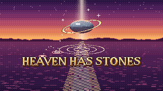

Play

On iPhone: tap Share, View More, then Add to Home Screen, for full screen.
On a computer? Play it on itch.io

On iPhone: tap Share, View More, then Add to Home Screen, for full screen.
On a computer? Play it on itch.io